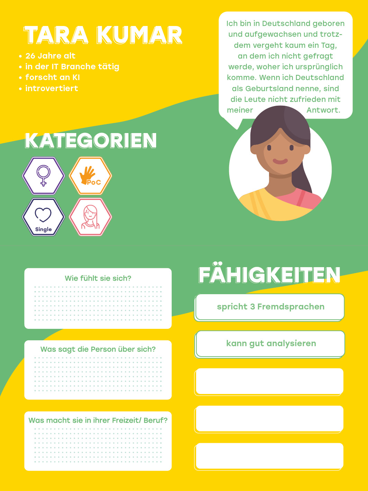

Der Ethik-Kompass
Begib dich auf eine Entdeckungstour
Diskriminierung in Algorithmen
Der technische Prototyp Hier kommst du zur Demo, die den technischen Part unserer Abgabe darstellt. Also dieses Ding, wo man Trainingsdaten sich anschauen kann
Kategorien, die zur Diskriminierung führen können
Etiam tristique libero eu nibh porttitor amet fermentum. Nullam venenatis erat id vehicula ultrices sed ultricies condimentum.
Vehicula ultrices sed ultricies condimentum. Magna sed etiam consequat, et lorem adipiscing sed nulla. Volutpat nisl et tempus et dolor libero, feugiat magna tempus, sed et lorem adipiscing.
Charakterkarten

Hier bieten wir einen kleinen Einblick in die Charakterkarten, die während des Workshops genutzt werden können. Das mehr so als interaktive Infografik. Zum Beispiel erscheint die Sprechblase so nach und nach getippt. Es wird gezeigt, wie die Fähigkeiten draufgelegt werden usw.
Szenarien
Wir begeben uns auf eine Reise, von der buchung einer Reise bis zum entspannen am Strand. Doch welche Szenarien lassen die Menschen. Darstellen kann man die Karteb in einem kleinen Karussel Element.
Schau dir das Toolkit im Detail an
Wir begeben uns auf eine Reise, von der buchung einer Reise bis zum entspannen am Strand. Doch welche Szenarien lassen die Menschen. Darstellen kann man die Karteb in einem kleinen Karussel Element.